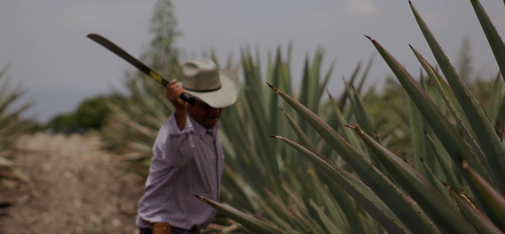
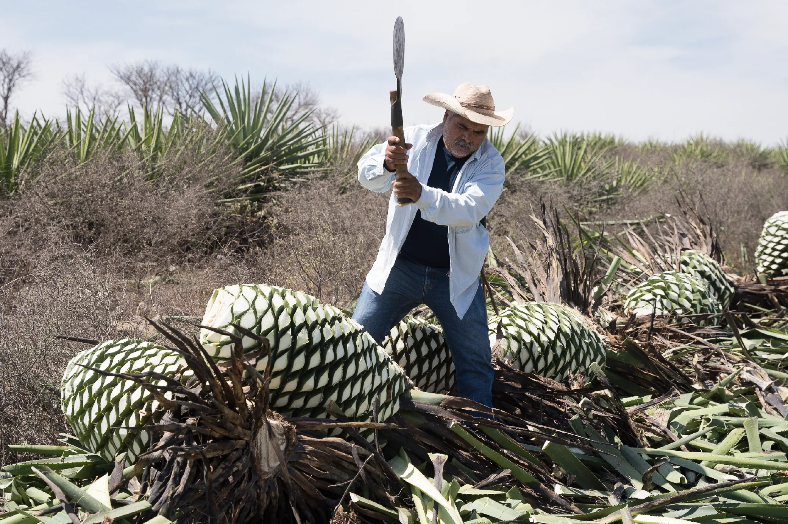
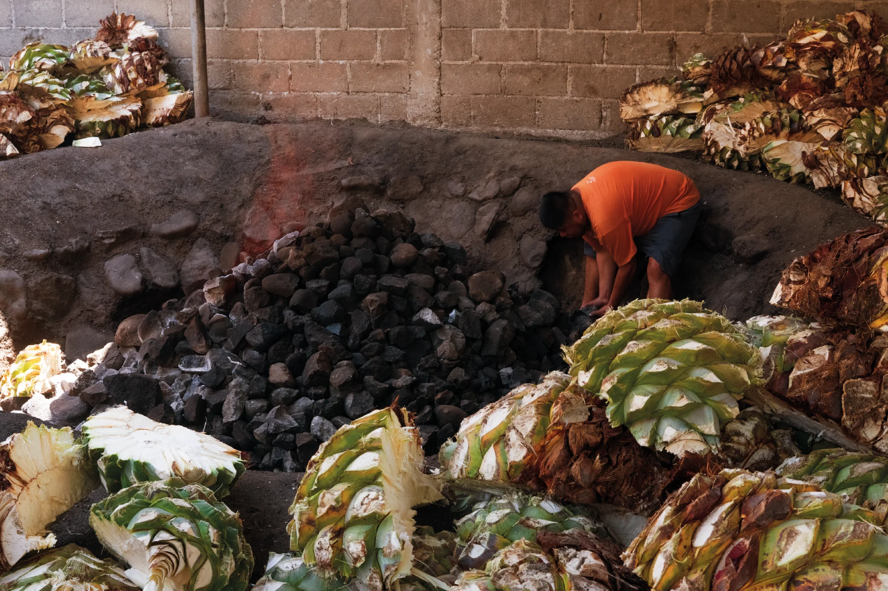
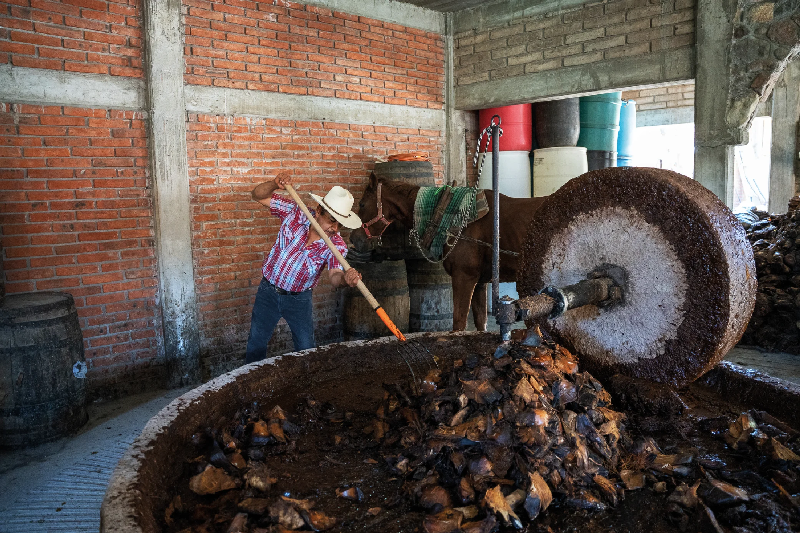
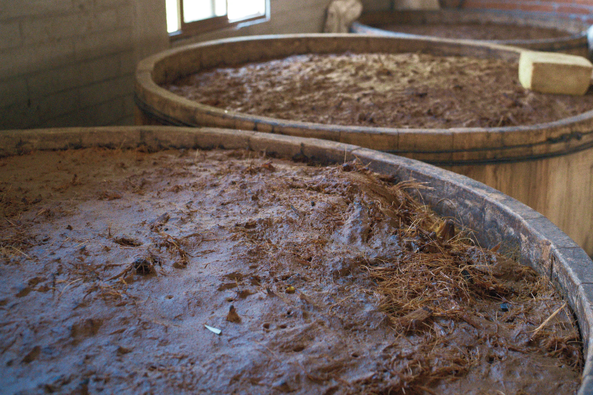
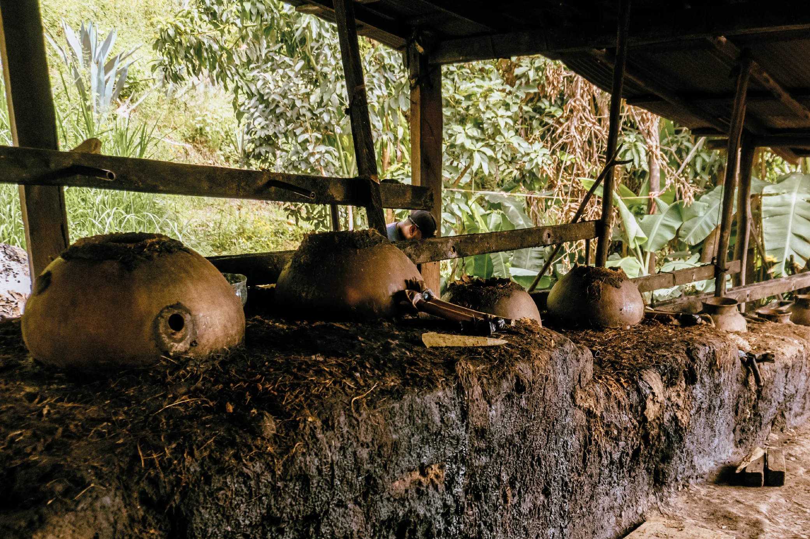

El Mezcal es una expresión viva de su gente, su entorno y su historia.
Explora el proceso artesanal, las comunidades y el conocimiento que dan vida a cada uno de nuestros Mezcales.

Proceso del Mezcal

Conociendo el origen
El maguey madura lentamente. Dependiendo de la especie, puede tardar hasta 25 años en alcanzar su punto óptimo. Es entonces cuando los Maestros Mezcaleros lo cosechan con ayuda de la coa, retirando cuidadosamente sus pencas hasta revelar la piña.

Paciencia a través del fuego
Las piñas se cortan manualmente, a la mitad o en trozos más pequeños según su tamaño. Después, se colocan en un horno cónico subterráneo de piedra volcánica y se cubren con tierra y otros elementos naturales para asegurar una cocción lenta y uniforme durante 4 a 5 días.

Transformando la piña
Después de la cocción, las piñas se muelen para extraer sus jugos y fibras. Dependiendo del proceso, pueden triturarse a golpe de mazo en una canoa, como parte de la elaboración del mezcal ancestral, o mediante una rueda de tahona de piedra volcánica, utilizada en el mezcal artesanal.

Tiempo y tradición
La mezcla obtenida se deja fermentar durante 3 a 4 días en tinas de madera al aire libre. Aquí, el tiempo y los elementos naturales transforman los azúcares y dan origen a los aromas y sabores que serán parte de cada destilación.

El momento cumbre
Finalmente, llega la destilación. El Maestro Mezcalero acompaña y guía cada momento del proceso para conservar aquello que hace único a cada mezcal.
En el proceso artesanal, el mezcal se somete a una doble destilación en alambiques de cobre. En el proceso ancestral, la destilación se realiza en olla de barro, siguiendo una técnica que ha sido preservada de generación en generación.
El arte del añejamiento
Algunas expresiones continúan su transformación en barricas de roble americano y francés, donde el tiempo aporta nuevas capas de aroma, sabor y carácter.
Agave de Cortés Reposado descansa durante un mínimo de dos meses; Agave de Cortés Añejo, durante un año; y Agave de Cortés Añejo 3 años, hasta tres años, convirtiéndose en la expresión de mayor maduración de la colección.
Conoce las comunidades, sus palenques y a las personas que mantienen vivo el conocimiento mezcalero.
Santiago Matatlán
Santiago Matatlán, ubicado en los Valles Centrales de Oaxaca, es la Capital Mundial del Mezcal. Aquí, el maguey se yergue con orgullo en los campos, encarnando la fuerza ancestral y transformándose en Mezcal. En cada gota se saborea el alma de Matatlán, el sabor de su cultura y el eco de sus tradiciones.
San Baltazar Guelavila
San Baltazar Guelavila, a solo una hora de la Ciudad de Oaxaca, es una tierra de suelos fértiles que alimentan pacientemente a sus magueyes. Su paisaje semidesértico y suelos ricos en minerales forjan Mezcales únicos, llenos de carácter y sabor.
Agua del Espino, Ejutla
Entre las tierras fértiles y vibrantes de Ejutla, el maguey espadín crece orgulloso junto al Agave Karwinskii, ambos nutriéndose de la esencia profunda de esta tierra. La tierra colorada y generosa de la región da vida a una gran diversidad de magueyes silvestres como el Madrecuishe, el Barril y el Tobasiche, formando un paisaje único donde tradición y naturaleza se entrelazan.
San Luis del Río
San Luis del Río es un pequeño pueblo de clima cálido y tropical, donde la vegetación abundante se mezcla con la brisa que desciende de la Sierra Sur. Ubicado en una región que colinda con los Valles Centrales de Oaxaca, este lugar se distingue por su clima húmedo y su exuberante entorno natural. Aquí, el Mezcal adquiere matices únicos que reflejan, en cada sorbo, la calidez de la tierra. No es raro encontrar notas frutales como mango verde o chicozapote, una expresión directa del paisaje tropical que rodea el palenque.
Santa María Zoquitlán
En esta tierra donde lo árido y lo tropical convergen, crecen magueyes silvestres como el Tepeztate y el Jabalí, verdaderas joyas botánicas que dan vida a Mezcales complejos y excepcionales. El camino al palenque atraviesa un paisaje diverso: cocoteros, mangos, papayas, tamarindos, huizaches, framboyanes, mezquites y limonares acompañan el trayecto, reflejando la riqueza del entorno. El pueblo está abrazado por un río que desciende desde las montañas de la Sierra Sur, aportando frescura y fertilidad a esta tierra única.
Río Seco
Regulo Martínez elabora su mezcal en un palenque comunitario en Río Seco, una agencia municipal perteneciente a Santa María Zoquitlán. En esta comunidad aún se practica la guelaguetza, un sistema de ayuda mutua: cuando un productor inicia su proceso, los demás colaboran en la molienda, destilación y demás etapas, y así se apoyan entre todos. El clima es semicálido, con abundante vegetación como mezquites, mangos, papayas, limonares y tamarindos. Aunque en el palenque predominan los mezquites, para el horno normalmente usan leña de huamúchil o huizache.
Lachiguí, Miahuatlán
En Lachiguí, Miahuatlán, junto a una barranca, se encuentra el rancho de la familia Vásquez Ogarrio —un refugio de tradición mezcalera. El camino hacia este rincón, entre senderos sinuosos y paisajes de ensueño, forma parte de la experiencia. El palenque se ubica entre las laderas de la ranchería, donde su principal fuente de agua brota directamente del cerro, aportando una distintiva mineralidad a sus Mezcales.
Gotzengo, Sola de Vega
Ubicado en las montañas de la Sierra Sur, Sola de Vega es un paraíso verde donde el viaje mismo se convierte en aventura. En este entorno remoto y fértil elaboran el Mezcal Ancestral, destilando en cada gota la esencia de nuestras raíces. El agua proviene de ojos de agua que brotan de los cerros, aportando pureza y carácter al proceso. La región es generosa en magueyes silvestres como el Sierrudo, Coyote, Arroqueño, Tobasiche y Mexicano, que crecen entre la neblina y el silencio del monte, esperando el momento justo para convertirse en Mezcal.
En Casa Cortés, la sostenibilidad no es solo una responsabilidad, sino un compromiso integral —social, ambiental y financiero— que guía cada una de nuestras acciones.
Apoyamos a las familias productoras de mezcal y a sus comunidades de manera profunda y duradera, más allá del aspecto financiero. Un ejemplo de ello es la construcción de un parque infantil en San Luis del Río, un espacio que refleja nuestro deseo de contribuir al bienestar y al futuro de quienes habitan estas tierras.
Creemos en ser un modelo de sostenibilidad ambiental, cuidando el entorno que da vida al maguey, para que las próximas generaciones puedan seguir disfrutando de la riqueza del Mezcal en Oaxaca y del legado cultural que lo rodea.